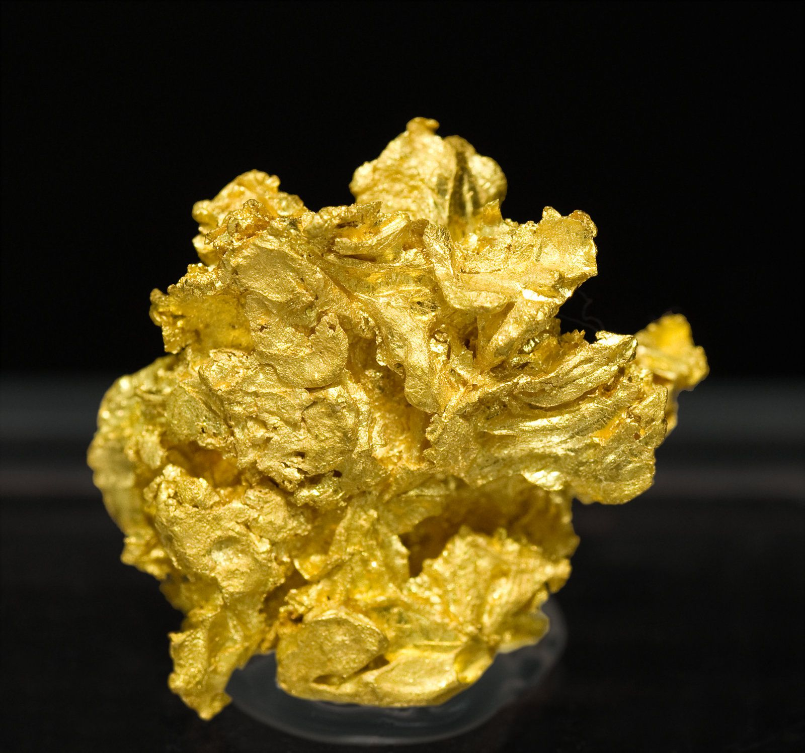
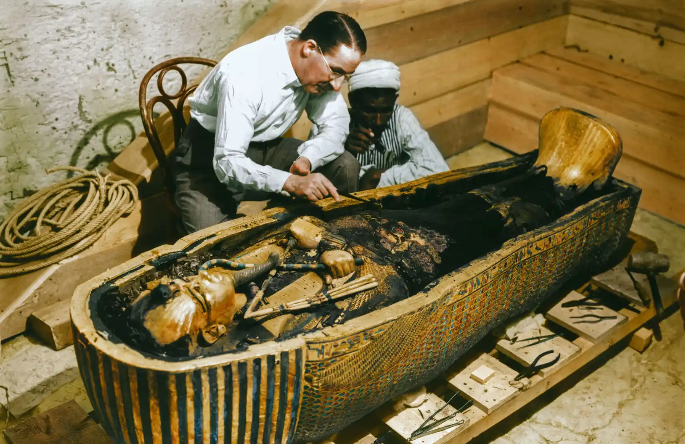

ORO
Los lingotes de oro son una manera de almacenar este metal.
Los mayores yacimientos se encuentran en China, Rusia, Estados Unidos, Canadá, Brasil y Australia. Este último es el país que cuenta con el mayor número de grandes minas (cinco en total).
El oro es un metal noble de color amarillo dorado que se popularizó en la antiguedad para fabricar objetos ornamentales y joyas. Actualmente se utiliza sobre todo en la industria electrónica y se ha convertido en un importante medio de intercambio debido a su gran valor.
Los buscadores de oro del lejano Oeste apodaron la pirita como ''el oro de los tontos''' porque se parece mucho al preciado metal, aunque en realidad tiene muy poco valor. Con un poco de práctica y un par de pruebas muy sencillas, los coleccionistas saben distinguir perfectamente ambos minerales.

Oro
Pirita
-
Clase:
Elementos nativos
-
Fórmula química:
Au
-
Composición:
Oro
-
Dureza:
2.5 - 3 en la escala de Mohs.
-
Exfoliación:
Ninguna
-
Fractura:
Ganchuda
-
Color:
Amarillo dorado
-
Brillo:
Metálico
-
Raya:
Amarillo brillante
-
Sistema cristalino:
Cúbico
Desde la antiguedad el oro se ha utilizado para fabricar objetos ornamentales y joyas.
El oro se ha convertido en un importante medio de intercambio ya que es muy valioso y escaso
Los vehículos espaciales de la NASA cuentan con múltiples componentes fabricados con este metal.
Acerca del Oro
¿Sabías que...?
Los artesanos de las civilizaciones antiguas se servían del oro para fabricar objetos de culto y también para decorar las tumbas y los templos de los reyes. En 1922, los arqueólogos británicos Howard Carter y Lord Carnarvon encontraron en Egipto numerosos objetos de oro fabricados hace más de 5000 años en la tumba del faraón Tutankamón, que gobernó aquel país en el siglo XIV a. C.
Debido a sus propiedades excepcionales, el oro es uno de los minerales más útiles que existen. Conduce la electricidad, no se empaña, puede fundirse a altas temperaturas, es fácil de moldear y es posible mezclarlo con otros metales.
El oro es un metal noble porque no se oxida en condiciones normales. Su símbolo químico Au proviene de la palabra en latín ''aurum''.
En estado puro tiene un brillo metálico y es de color amarillo dorado, aunque al mezclarse con otros metales aparecen tonalidades come el blanco plateado, el verde, el rojo y el naranja. El oro puro es el metal más maleable y dúctil que existe por su poca dureza. Además, como es muy pesado en comparación con otros minerales puede separarse fácilmente de la arcilla, la arena y la grava mediante diversos sistemas de cribado.